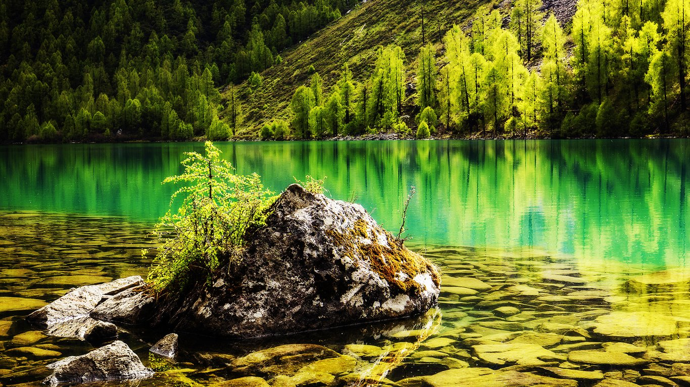
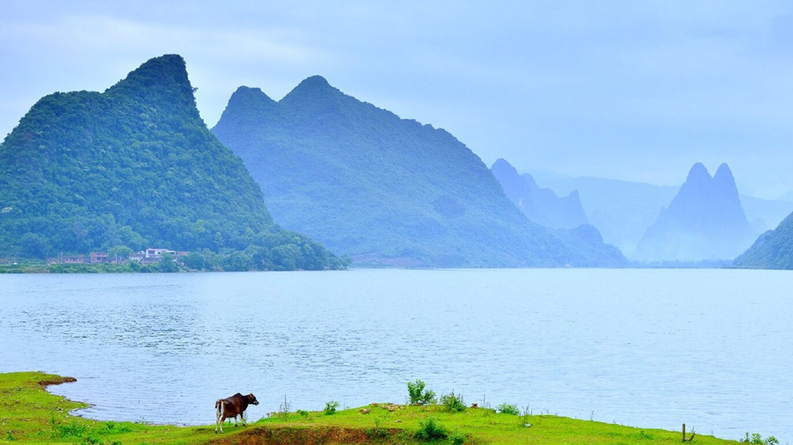
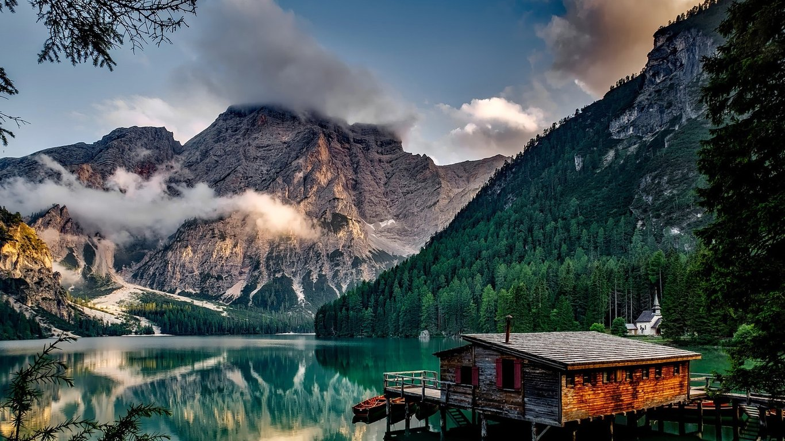
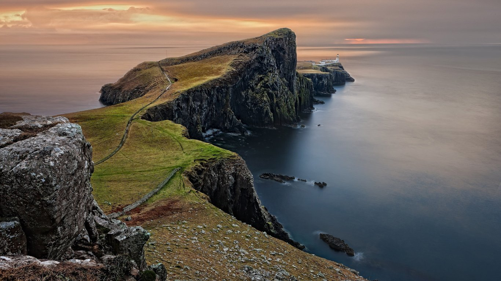

Photo by Randy Connolly
This photo of Conservatory Pond in Central Park in New York City was taken on October 22,2011 with a Canon EOS 30D camera.

Conservatory Pond in Central Park
  
By Ricardo on
Easy on the HDR buddy.
By Susan on
I love Central Park.
Copyright © 2015 Share Your Travels